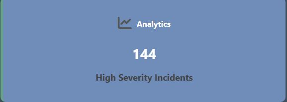
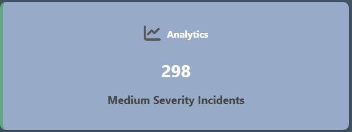
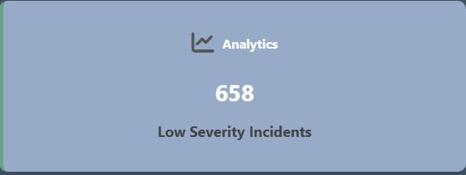
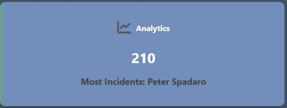
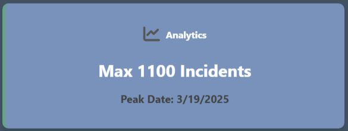

Interface
Pages: Fullscreen interfaces dedicated to specific functions within the platform.
-
Analytics: Visualizes data and trends related to bullying statistics within the school and system performance.
The Analytics page provides comprehensive insights into bullying trends and system performance through various visualizations and statistics.

The Frequent Bullies table displays the top 10 users who have been identified as bullies based on the number of incidents they have been involved in.

The Bullying By Severity Level table displays the number of incidents for each severity level.
The Dates with Highest Bullying Rates table displays the dates with the highest number of incidents.

Visualizations of application performance are also displayed. Each can be selected to view a larger preview.
-
Home: Greets the user to the website and provides a brief overview of the other pages via clickable widgets.

The Home Dashboard page displays two selectable widgets. Selecting a widget will navigate the user to the respective page.
The first is the Incidents widget which displays a highlight of the current number of incidents in the queue.
The second is the Analytics widget, which cycles through highlights of each table found on the Analytics page.

To navigate back to the Dashboard page, select the Home button on the Navbar.
-
Incidents: A constantly updating table of flagged bullying incidents that contains the Content ID, User ID, Username, Severity Level, Alert Status, and Timestamp of each incident. Every incident is clickable and will redirect the user to the Incident Details page.


Up to 50 incidents can be displayed per page. When there are more, page navigation is enabled

The table can be filtered to display either All, Resolved, or Pending Review incidents.

- Content ID: Identifies the post that was flagged by the AI
- User ID: Identifies the user who posted the content
- Username: Identifies the username of the user who posted the content
- Severity Level: Identifies the severity level of the incident on scale of Zero, Low, and High
- Alert Status: Identifies the current review status of the incident
- Timestamp: Identifies the time at which the incident was posted

Resolved incidents are displayed as a lighter gray block, and incidents pending review are darker gray.
-
Incident Details: The set of data associated with a detected cyberbullying event. This page allows the user to change the status of incidents from "pending review" to "resolved."

-
Login: The authentication process through which a user gains access to the BullyBlock system.


-
Register: The registration interface allows for the creation of new application user accounts with role-based privileges.

Common Components: Shared elements across multiple pages on the website.
-
Footer: Provides supplementary navigation links such as privacy policy, terms of use, and contact information.

-
Navigation Bar: Allows users to navigate the platform, with links to core pages like Home, Analytics, and Incidents.

-
Notification Pop-Up: Displays a pop-up of recent notifications that is updated with each alert.

Specific Components: Elements serving a particular purpose for a single page.
-
Dashboard Widget: Visually identifies the key pages that perform the major functions of the application. Displayed on the landing page once a user logs in.
Incidents Widget
The Incidents Widget provides a real-time overview of the current number of incidents detected by the system.

Analytics Widget
The Analytics Widget cycles through different statistics to provide insights into system activity. Some of the key metrics displayed include:
Severity Level
  Student with Most Incidents
Peak Date for Highest Bullying Incidents
